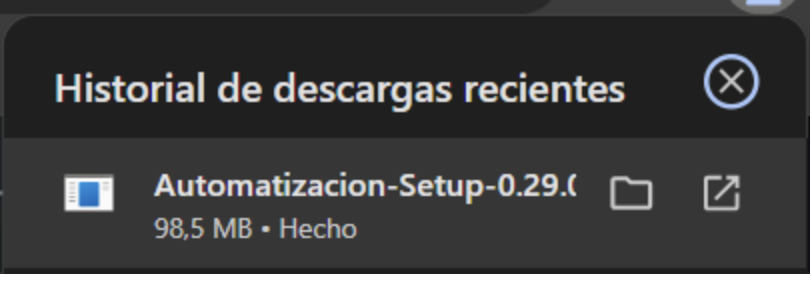

Installation
How to install Automatizacion on Windows
Installing the simulator on Windows 10 or 11 takes a couple of minutes. This guide takes you step by step, with screenshots, from the download to opening the app for the first time. The screenshots come from a Windows set to Spanish, and the installer itself is in Spanish: next to each Spanish button you have what it means.
-
Step 1: Download the installer
Click Installer .exe in the downloads section. Your browser saves it in your Downloads folder. When it finishes, double-click
Automatizacion-Setup-….exeto start the installation.
-
Step 2: Windows shows a warning: that’s normal
Before the installer opens, Windows shows the “Windows protected your PC” screen. It appears because the installer has no paid digital signature: a certificate that has to be bought every year, which this free project doesn’t have. That’s why Windows calls it an “unrecognized app” from an “unknown publisher”. It doesn’t mean that Windows found anything wrong with it.

-
Step 3: Click “More info” and “Run anyway”
Click the More info link under the warning text. The file name (
Automatizacion-Setup-….exe) and the Run anyway button appear: click it to open the installer. In the Spanish screenshots they are Más información and Ejecutar de todas formas.
-
Step 4: Follow the installer
The installer is in Spanish. Keep the options it suggests: Solo para mí (just for me; it doesn’t ask for administrator rights), Siguiente (Next), the installation folder it proposes and Instalar (Install). If you already had a version installed, it says so at the bottom and updates it: your projects are kept.

-
Step 5: If it says that Automatizacion is running
This message (“Automatizacion está activa”) only appears if the app was open, for example when updating from an earlier version. Click Aceptar (OK): the installer closes the app and goes on. If it doesn’t close by itself, close it yourself and click Aceptar again.

-
Step 6: Finish and open the app
At the end, leave Ejecutar Automatizacion (Run Automatizacion) ticked and click Terminar (Finish). The app opens in the free simulator, ready for your first program. From now on you have it in the Start menu and as a shortcut on the desktop. If it opens in another language, change it in Settings ▸ Language.

Other ways and help
- No permission to install programs (a school computer, for example): download the Portable .zip, unzip it and open
Automatizacion.exe. It needs no installation; if Windows shows the same warning, get past it the same way, with “More info” and “Run anyway”. - To update, download the new installer and repeat the steps: it installs over the previous version and keeps your projects. In the app, the menu Ayuda ▸ Buscar actualizaciones… (Help ▸ Check for updates) tells you if there is a new one.
- On a Mac or on Linux? The instructions are in the FAQ. If something doesn’t work, report it on GitHub.